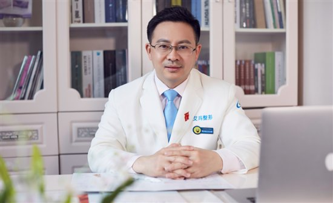
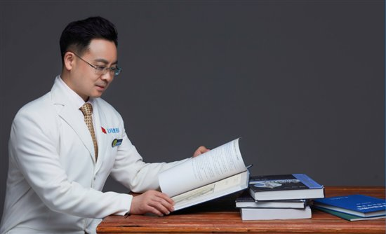
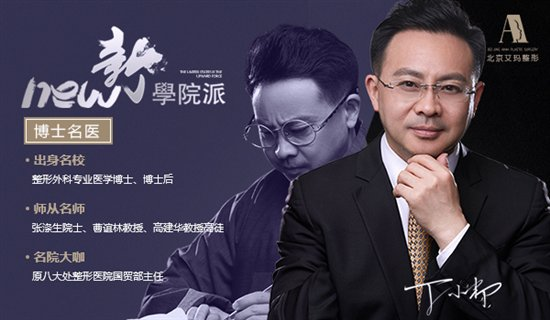

从业23年的丁小邦博士 新一代整形医师
2018-04-17 16:42:36 来源: 综合 作者:
漫漫医美路，上下求索
一、丁小邦博士：不知不觉，我从医已经23年了。

1995年，我开始临床医学的实习。从毕业实习期开始，我就对整形外科产生了浓厚兴趣。前圣说：医学的目的是提高人类生活质量，造福群众。整形医学，这种可以对人的形体、五官进行再塑造从而提高外表竞争力的科学，对我产生了强烈的吸引力。
更为幸运的是，在上海九院实习期间，整形泰斗张涤生院士及曹谊林教授成了我的指导恩师。实习期满时，张涤生院士给了一个极大鼓舞我的评价：丁小邦，新一代整形医师。
1996年—1999年，我在规培阶段，轮转蚌埠医学院附属第一医院及上海交通大学医学院的各个科室，同时准备整形外科研究生入学考试。
1999，我重回上海九院开始攻读整形外科的硕士研究生。我的导师是著名的整形外科专家，上海九院副院长、国家组织工程973项目首席科学家曹谊林教授。读研期间，我开始从事国家973项目组织工程软骨研究，并作为主要参与者完成了国内裸鼠背上的人耳模型首次构建。
2002年硕士毕业。同年，我进入广州医学院附属第一人民医院工作。
2004年，我赴南方医科大学攻读博士学位。读博期中间段的2005——2007年，我在空总医院整形外科工作。
2007年，我在北京协和医学院进入博士后阶段。同时，2007——2012年间，我在中国医学科学院整形外科医院(原八大处整形)工作，任国贸部及平安部的美容外科主任。
2012年起，我在北京艾玛医疗美容诊所有限公司任职技术院长至今。
二、如何做一个好的整形医生

在求学及工作期间，我一直在思考如何做一个好的整形医生。
如果要做一个好的整形医生，首先必须做一个正能量的人。什么是正能量，就是要保持积极的心态。拥有积极的心态，才能精益求精，为每一位顾客全力以赴，让顾客美的浑然天成。
作为一个整形医生，我希望得到尊敬、信任、认同，最重要的是什么?是发自内心地去尊重我的每一位顾客。只有这样，顾客才会从她内心深处感受到我的真诚。
作为一个好的整形医生，同样还要有一颗同理心。我相信每一位整形医生都能认识到这一点，那就是每位顾客都是带着因外表而产生的苦恼来的。如果没有同理心，那么医者怎么能保持初心，全心全意去解除顾客的忧虑?所以我们要有同理心。
三、美丽就是竞争力
每个人都有追求美的权利，美丽是一种无形的竞争力。
美国联邦政府发行的“地区经济学家”中一项研究报告指出，长相好的人，不仅薪水可能比普通人多，升迁的可能性也更大。另外，身材的好坏也会影响到薪金的多少。例如，胖女人比普通身材者平均要少领17%的薪水，而身材高挑者，身高每高出一寸，薪水平均上涨2%到6%。
在情场中，美丽也让人获得更多的择偶机会。试想一下，你能干、优秀、有责任心，却仅仅因为外表输阵，而错失了能和心仪异性进行初步接触的机会，继而随之丧失了互相了解的可能，岂不是非常遗憾。你的真命天子或真命天女，其实也不过是遇到美女帅哥会多看一眼的普通人。
哪怕是去外面吃个饭、买件衣服，更美丽的你能得到更殷勤的服务。生活中遇到一些小麻烦、小困难，更美丽的你能收获更多的善意。
三、美丽就是竞争力

无论是童话中的女神标准“真善美”，还是现实中的女神标准“白富美”，都充分体现了追求美是人的本能。很多女性心中都有追求美的梦想。这些爱美女性，她们是美丽梦想的真正拥有者，而我作为一个整形医生，只是全力以赴地用科学手段帮助她们实现而已。